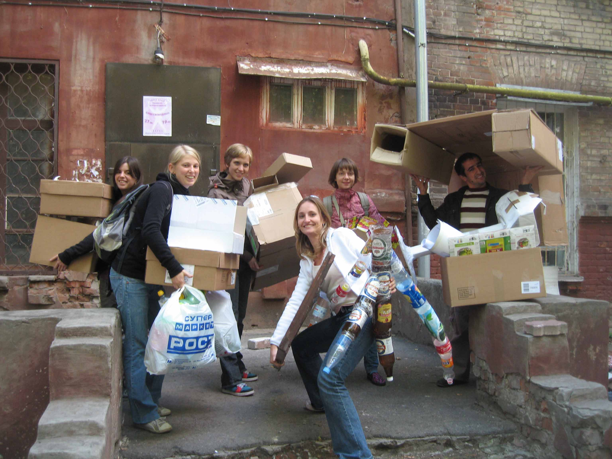
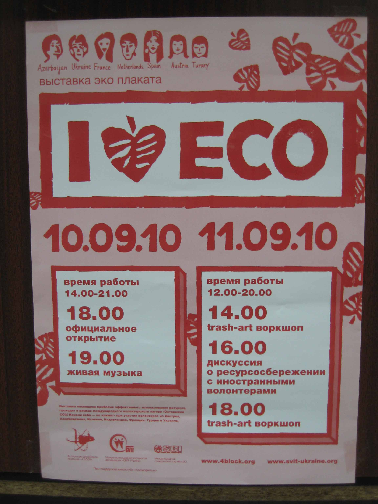
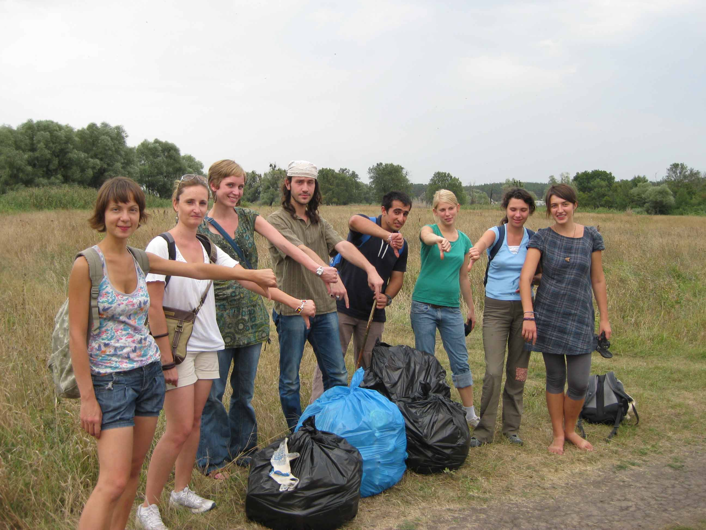

Projecten
Overig
Change yourself, not the climate, Warning CO2
Verslag van een vrijwilligersproject in Kharkov, Oekraine
Al jaren ben ik aktief voor Stichting VIA. Als vrijwilliger op kantoor, in de werkkampgroep, als kampbegeleider en op internationaal niveau. Hartstikke leuk en inspirerend allemaal natuurlijk. Alleen besefte ik mij vorig jaar ineens dat ik al jaren niet meer zelf had deelgenomen aan een vrijwilligersproject. Dat werd dus wel weer eens tijd! Enthousiast ging ik daarom op zoek. Toen ik de titel van het vrijwilligersproject in Oekraïne zag – Warning CO2: change yourself, not climate - wist ik meteen: dit is het! Ik wilde al jaren een keer naar Oekraïne en duurzaamheid is iets wat ik heel belangrijk vind. Het werk was educatief van aard, dus mijn twee linkerhanden vormden geen obstakel, of positiever geformuleerd: ik kon mijn talenten en ervaring gebruiken in het project. Bovendien is SVIT-Ukraine in 2009 tak van SCI geworden en was ik ontzettend benieuwd naar onze nieuwe collega's in dit prachtige Oost-Europese land.
Toen ik geaccepteerd was voor het project, was het tijd voor de volgende stap: het boeken van de reis. Aangezien het thema van het project duurzaamheid was, leek het me nogal onethisch om te gaan vliegen. Al deed de rest van de deelnemers dat natuurlijk gewoon wel, ik ging met mijn idealistische ideeën dapper met de trein. Het was een reis van 40 uur: eerst naar Berlijn, dan met de nachttrein naar Kiev en dan weer met een andere nachttrein van Kiev naar Kharkov. Nogal een onderneming dus. Vooral omdat niemand op Kiev International Train Station een woord Engels schijnt te spreken en ik in mijn beste Russisch wel een kop koffie (zonder suiker, graag) kan bestellen, maar dus niet kan uitleggen dat ik graag de nachttrein wil reserveren. Laat staan dat ik een vegetarische maaltijd op de kop kan tikken. Gelukkig ontmoette ik een jongeman die vloeiend Duits en Engels sprak en mij maar al te graag wilde helpen. Helaas in ruil voor mijn e-mailadres, maar goed, je moet er wat voor over hebben.
Eenmaal aangekomen in Kharkov na twee nachtjes 'slapen' in een trein ging het project direct van start met een weekendje in een zogenaamde datsja. Een datsja is een soort zomerhuisje, waar de mensen uit de stad groenten verbouwen en in de zomers ook vaak vertoeven. Het is dus geen luxe, maar noodzakelijk om het hele jaar door het gezin van eten te voorzien. We hadden ons geen betere start kunnen wensen. In de stromende regen en in het pikkedonker moesten we de weg zien te vinden om vervolgens zonder elektriciteit en stromend water een maaltijd te bereiden. Heerlijk. We waren meteen een groep. Gelukkig had ons appartement in de stad een wasmachine.
Hoewel het oorspronkelijke idee van het project het organiseren van workshops was, waarmee we rond het land zouden reizen, bleek het project uiteindelijk te bestaan uit het opzetten van een tentoonstelling in de stad Kharkov. Zo zie je maar: wees flexibel en pin je nergens op vast. De deelnemers van een project dat parallel aan het onze plaatsvond hadden dat wel gedaan en waren erg teleurgesteld en boos toen het project niet aan hun verwachtingen voldeed. Mijn groep echter maakte er het beste van en had een fantastische tijd, ook al leek het project in het niets op de initiële beschrijving.
We hebben in twee weken tijd een tentoonstelling opgezet over duurzaamheid, genaamd 'I Love ECO'. We hebben 'kunst' gemaakt van afval, posters over het thema geleend van een designersgroep uit Kharkov, informatie opgezocht over energieverbruik en vooral veel tips voor het dagelijks leven geformuleerd waarmee bezoekers direct aan de slag konden. Maar onze absolute masterpiece was toch wel de man in the shower. Op levensecht formaat.

De tentoonstelling vond plaats op 10 en 11 september 2010 en werd verrassend goed bezocht. We hebben voor de deur staan flyeren en wisten zo veel mensen te interesseren. In totaal is de tentoonstelling door honderden mensen bezocht. De bezoekers gaven stuk voor stuk aan dat hun ogen geopend waren en dat ze vanaf nu beter zouden letten op de kleine dingen die duurzaamheid kunnen vergroten.
Al met al beschouw ik het project als zeer geslaagd. Ik heb weer een aantal ontzettend bijzondere mensen ontmoet en ontzettend veel gelachen en geleerd. En hoewel Oekraïne met de trein echt ver weg is, kan ik het iedereen aanraden om de Oost-Europese cultuur ook eens op deze manier te bekijken.
Floor Bakker